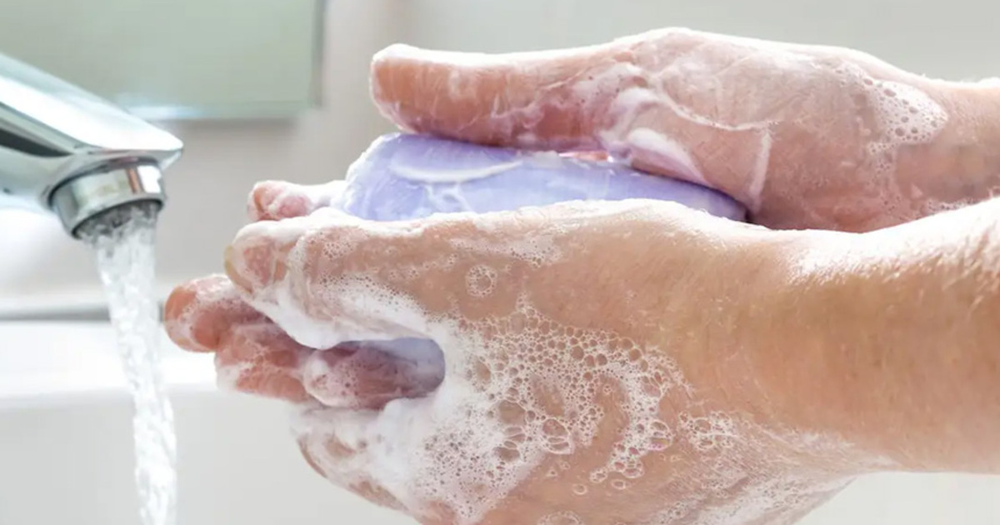
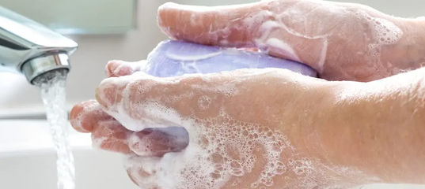

Учёные подсчитали, сколько раз в день надо мыть руки для защиты от коронавируса

Учёные из Университетского колледжа Лондона подсчитали, сколько раз в день надо мыть руки для защиты от коронавируса.А точнее нашли корреляцию определённого числа со сниженным риском заражения.
Стоит отметить, что пока исследование опубликовано на платформе Wellcome Open Research и ожидает экспертного обзора.Если работа будет одобрена, она станет первой, подтверждающей эффективность регулярного мытья рук в борьбе с сезонной коронавирусной инфекцией, в том числе, как утверждается, с COVID-19.
Для исследования 1633 участника предоставили информацию о том, как часто они моют руки, и заражены ли коронавирусной инфекцией.Учёные классифицировали частоту мытья рук по трём категориям: низкая (менее 5 раз в день), умеренная (6-10 раз в день) и высокая (больше 10 раз в день).
Умеренная частота мытья рук оказалась связана со сниженным риском заражения коронавирусом — на 36% по сравнению с теми, кто мыл руки редко.
Your browser does not support the playback of this video.Please try using a different browser.
Posted On: 2020-05-21T21:00:00

Content Date: 2020-05-21
Download Date: 2021-05-13
Document ID: L0C04BZ5G